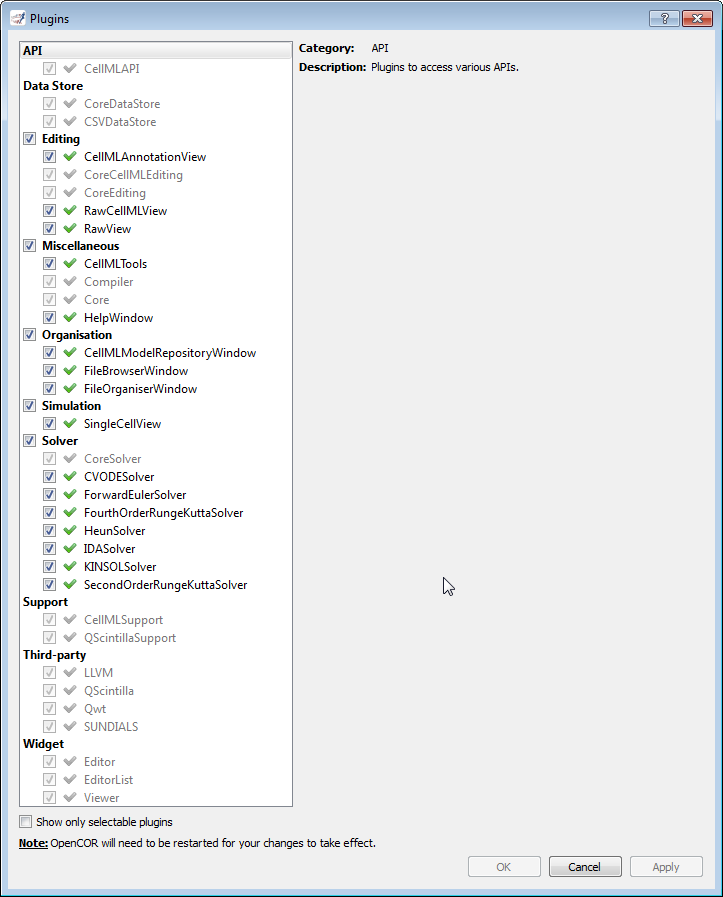

OpenCOR is a plugin-based application. As can be seen by opening the Plugins dialog (either by selecting the Tools | Plugins... menu or by clicking here) and by unselecting Show only selectable plugins (if necessary), OpenCOR comes with different types of plugins:

You can select which plugins you want to use. However, plugins that are needed by other plugins (e.g. the Core plugin is needed by the PMRWindow plugin) cannot be directly selected. Instead, they will be automatically selected if and only if they are needed by at least one other plugin.
Most of the selectable plugins come with some kind of a GUI, which is of one of two types:
As can be imagined, if no plugins are selected, then OpenCOR can do next to nothing.
(Non-selectable) API plugins are used to access to various APIs:
Data Store plugins are used to store and manipulate data:
Editing plugins are used to edit files:
There are also some non-selectable Editing plugins:
Miscellaneous plugins are used for various purposes:
There are also some non-selectable Miscellaneous plugins:
Organisation plugins are used to organise files:
Simulation plugins are used to simulate files:
Solver plugins are used to access to various solvers:
(Non-selectable) Support plugins are used to support various third-party libraries and APIs:
(Non-selectable) Third-party plugins are used to access to various third-party libraries:
Tool plugins are used to access to various tools:
(Non-selectable) Widget plugins are used to access to various ad hoc widgets: